FOMUS MASU — Le masu en marque
FOMUS est une marque dédiée au masu. Nous bâtissons sur ce récipient vieux de 1 300 ans — finitions, produits, espaces, photographies et histoires — et nous le portons à l'étranger.
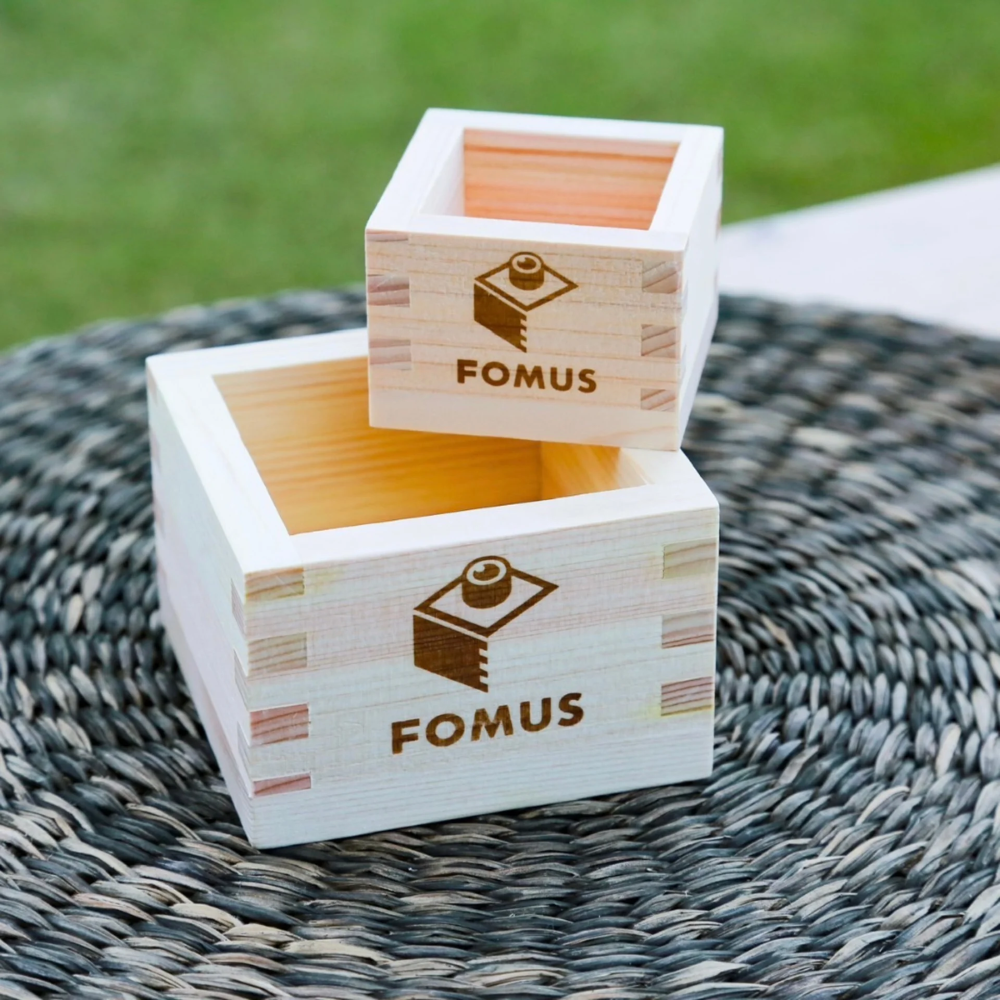
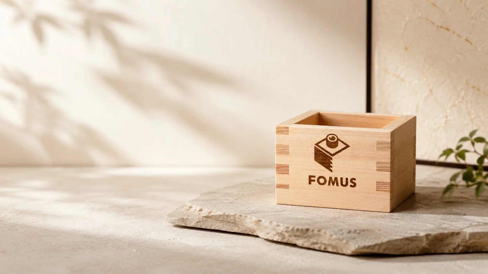
Le masu (boîte en bois de cyprès japonais) est un gobelet de bois utilisé au Japon depuis l'époque de Nara. Né comme instrument de mesure du riz et du saké, il est devenu un symbole de fête et de bonne fortune. En japonais, le mot « masu » signifie aussi « augmenter » : ce gobelet exprime ainsi, de façon intemporelle, le vœu d'abondance.
FOMUS s'attache à faire de ce récipient, longtemps réservé au Japon, un objet utilisable partout dans le monde — en préservant le parfum naturel et les qualités antibactériennes du cyprès hinoki.
Notre travail consiste à donner à ce récipient de nouveaux usages et de nouvelles histoires, et à le faire voyager hors du Japon. Jusqu'où un seul récipient peut-il aller ? Nous l'emmenons dans trois directions.
Revêtement imperméable, feuille d'or, gravure laser, fers à marquer. Un masu qu'un restaurant peut laver chaque jour, un masu digne d'une réception officielle, un masu qui porte un nom dans une autre langue. Chaque finition élargit les lieux où le récipient trouve sa place.
Bijoux, objets porte-bonheur, murs architecturaux, livres photo, cadeaux régionaux. D'un seul récipient est née une famille de marques, chacune avec sa forme propre.
Réceptions dans les ambassades du Japon, événements culturels à l'étranger, communautés locales. Nous apportons le masu en personne, nous le mettons entre les mains des gens, et nous rapportons leurs réactions dans ce que nous créons ensuite.
Pour FOMUS, le masu n'est pas un produit mais un point de départ. Voici ce qui en est né.
Boutique — acheter un masu
La boutique spécialisée. Sept tailles de masu japonais en hinoki, gravure dès une seule pièce. Avant votre commande, nous vous envoyons un devis et un aperçu de la gravure finale, gratuitement.
masu.fomus.jp ↗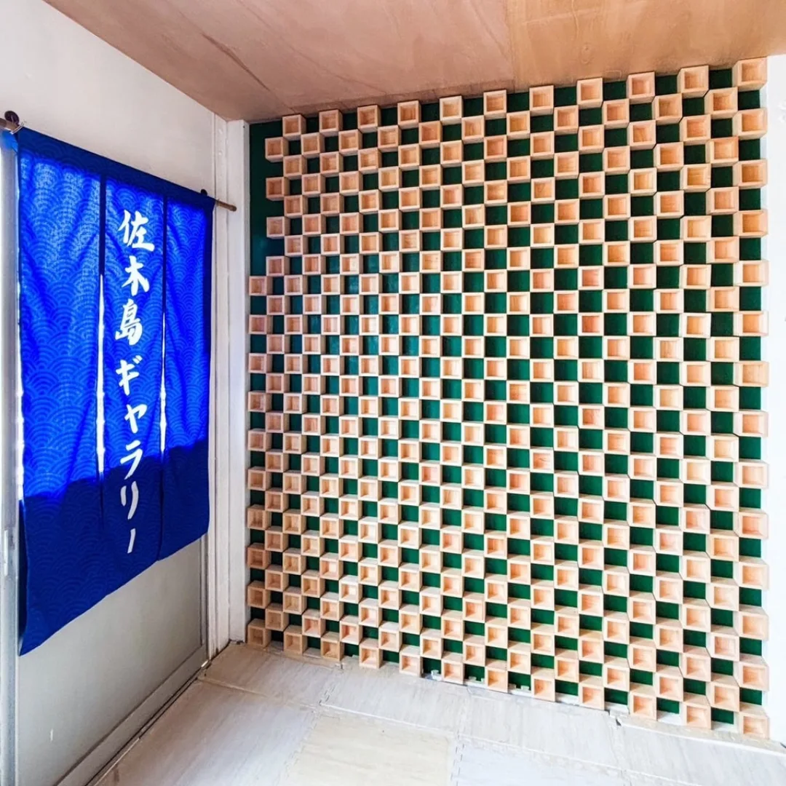
Architecture — construire avec le masu
Des masu d'une contenance d'un go, fournis comme modules pour des murs, des cloisons et des colonnes. Dans une galerie de l'île de Sagishima, à Hiroshima, nous avons construit un mur avec environ 300 d'entre eux.
Voir le mur de masu ›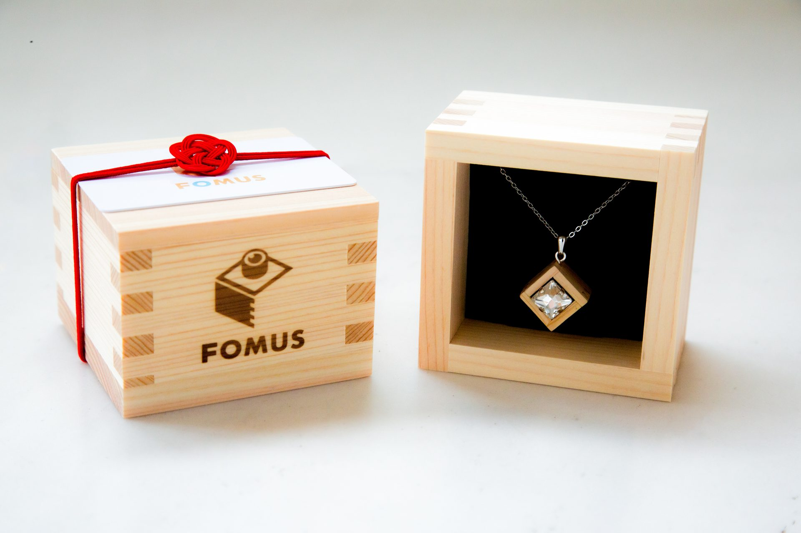
Bijoux — porter un masu
Des bijoux construits autour du plus petit masu en hinoki du monde, dont les parois mesurent 1,6 mm d'épaisseur. Assemblés à la main selon l'assemblage traditionnel arare-gumi, dix pièces par mois.
Découvrir KUMIKI ›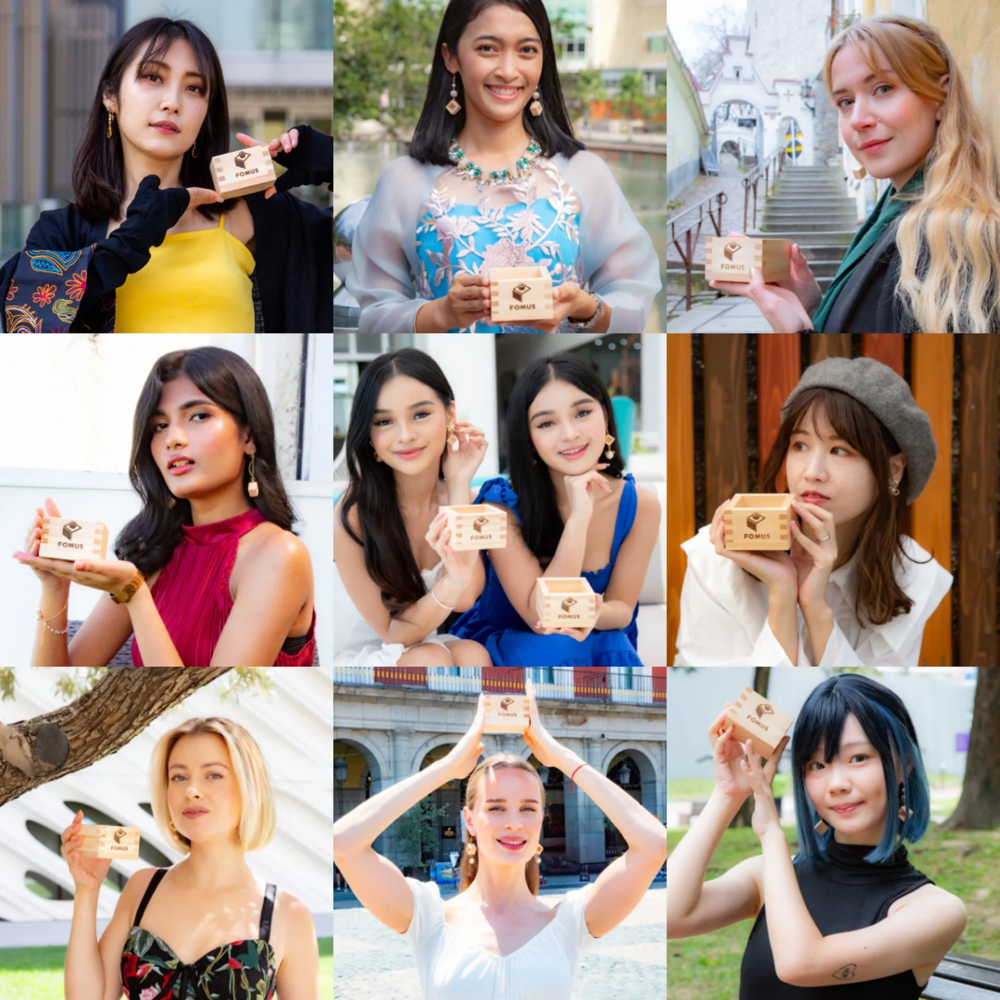
Photographie — photographier le monde avec un masu
Un projet photographique en cours : des portraits réalisés, un masu à la main, dans 20 pays. Douze livres photo, tous à lire gratuitement en ligne.
masuphoto.fomus.jp ↗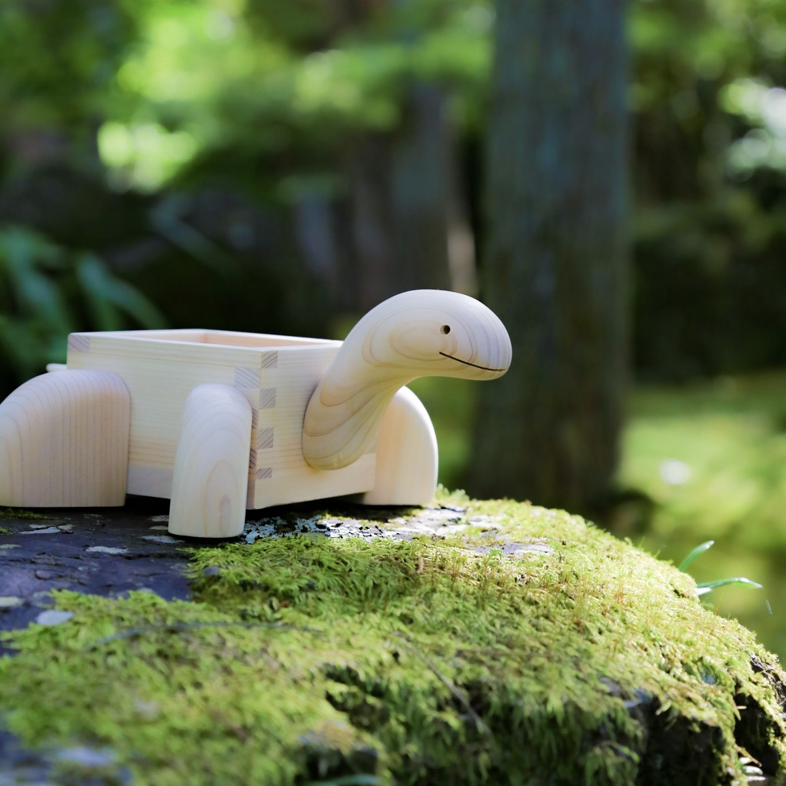
Objet — exposer un masu
Un objet porte-bonheur qui unit le masu à la tortue, symbole de longévité. Fabriqué sur commande, comme cadeau porteur de vœux de prospérité et de longue vie.
Découvrir MASUKAME ›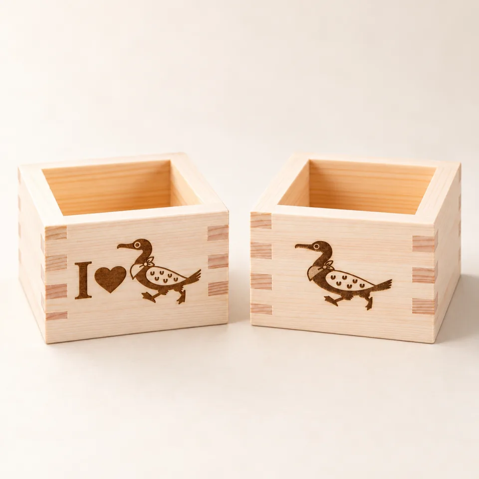
Terroir — faire d'un masu le visage d'un lieu
Une marque de Fuefuki, dans la préfecture de Yamanashi, qui tire son nom du kachiu, la pêche locale au cormoran pratiquée à pied. Son emblème est marqué au feu sur un masu en hinoki, proposé avec de la confiture de pêche.
kachiu.jp ↗Les masu FOMUS sont fabriqués à partir de chutes de cyprès hinoki japonais autrefois destinées à l'architecture et à la menuiserie. Plutôt que d'abattre de nouveaux arbres, nous offrons une seconde vie à une matière qui a déjà servi — un choix qui tient à cœur à la marque.
Des chutes de hinoki japonais issues de la construction et de la menuiserie sont façonnées en masu.
Des bois japonais au parfum naturel, à la texture douce et à la présence apaisante.
Les copeaux issus de la fabrication sont réutilisés comme matériau de calage : à l'ouverture de la boîte, un doux parfum de hinoki s'en échappe.
Chaque option peut être choisie seule — ou combinée avec les autres pour une pièce entièrement sur mesure.
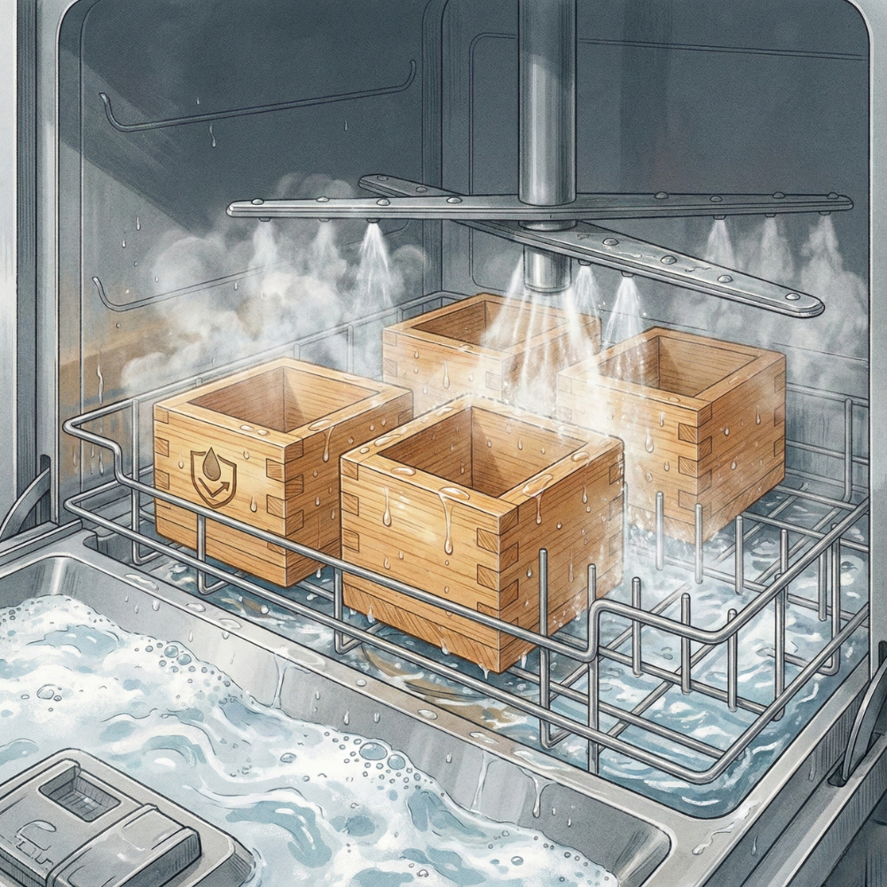
01
Conçu pour un usage professionnel
Un revêtement exclusif, sans danger pour les aliments, rend le masu compatible avec le lave-vaisselle et résistant à un usage répété. Idéal pour les restaurants, les bars à saké et les hôtels qui veulent un authentique récipient japonais pour le service quotidien.
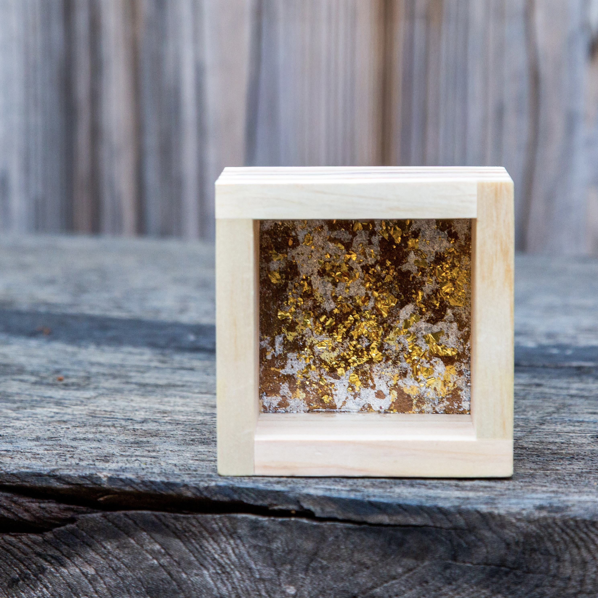
02
Un prestige incomparable
La technique de feuille d'or propre à FOMUS fixe de la véritable feuille d'or sur la surface du hinoki. Le contraste entre le veinage naturel du bois et l'éclat de l'or en fait un choix exceptionnel pour les cadeaux d'entreprise haut de gamme et les présentations en ambassade.
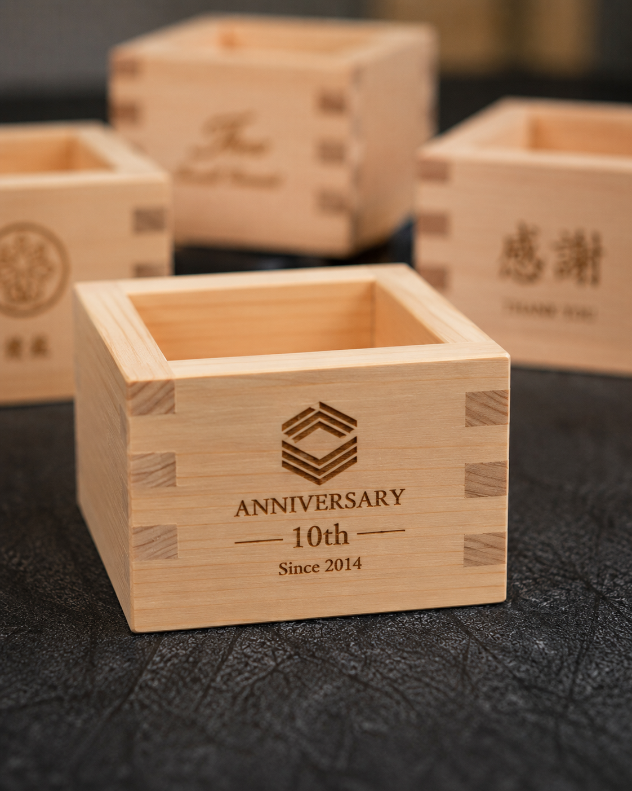
03
Une précision dès la première pièce
Tout logo, texte ou illustration reproduit avec une grande netteté. Disponible dès une seule pièce — parfait pour les cadeaux personnels, les cadeaux d'invités de mariage et les objets promotionnels d'entreprise.
04
Intemporel et discret
Une technique japonaise traditionnelle qui utilise une forte chaleur. La texture naturelle du bois reste au premier plan, et l'empreinte gagne en caractère avec le temps. Idéal pour les maisons de tradition et les esthétiques classiques.
Exemples de combinaisons
Les options peuvent être combinées : revêtement + feuille d'or, revêtement + gravure laser, marquage au fer + feuille d'or — nous vous recommanderons la meilleure combinaison selon votre usage et votre quantité.
Des couvercles de masu dédiés sont également disponibles en option.
Du comptoir de restaurant aux réceptions diplomatiques, les masu FOMUS trouvent leur place en toute circonstance.
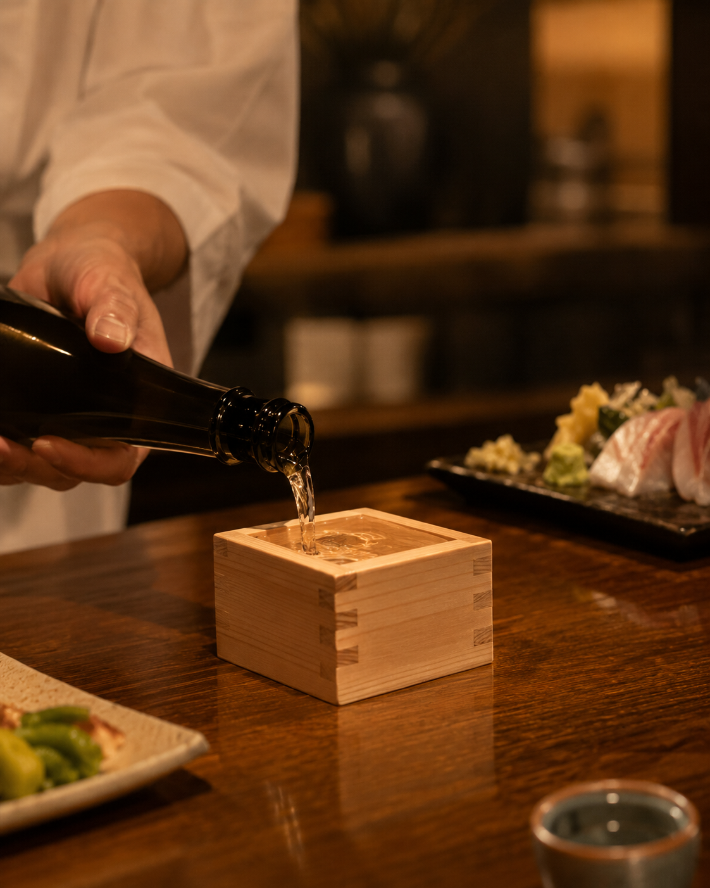
01 — Restaurant
Le revêtement imperméable permet un usage répété et le lavage au lave-vaisselle. Le meilleur choix pour les bars à saké, les restaurants et les hôtels.
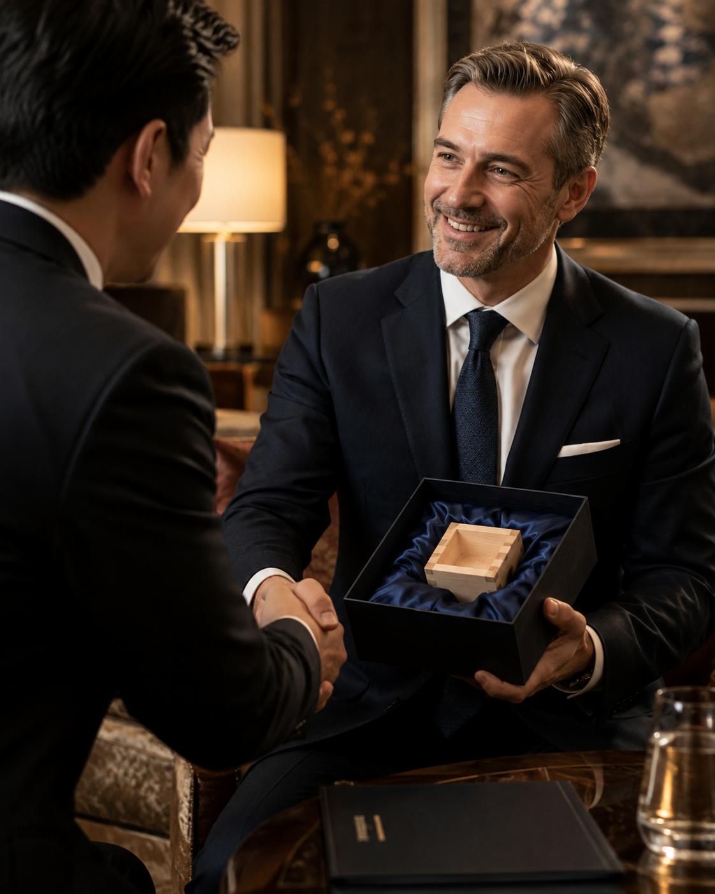
02 — Entreprise
Anniversaires d'entreprise, cadeaux VIP, présents destinés à l'étranger. La gravure de logo et la finition à la feuille d'or en font un récipient haut de gamme pour votre marque.
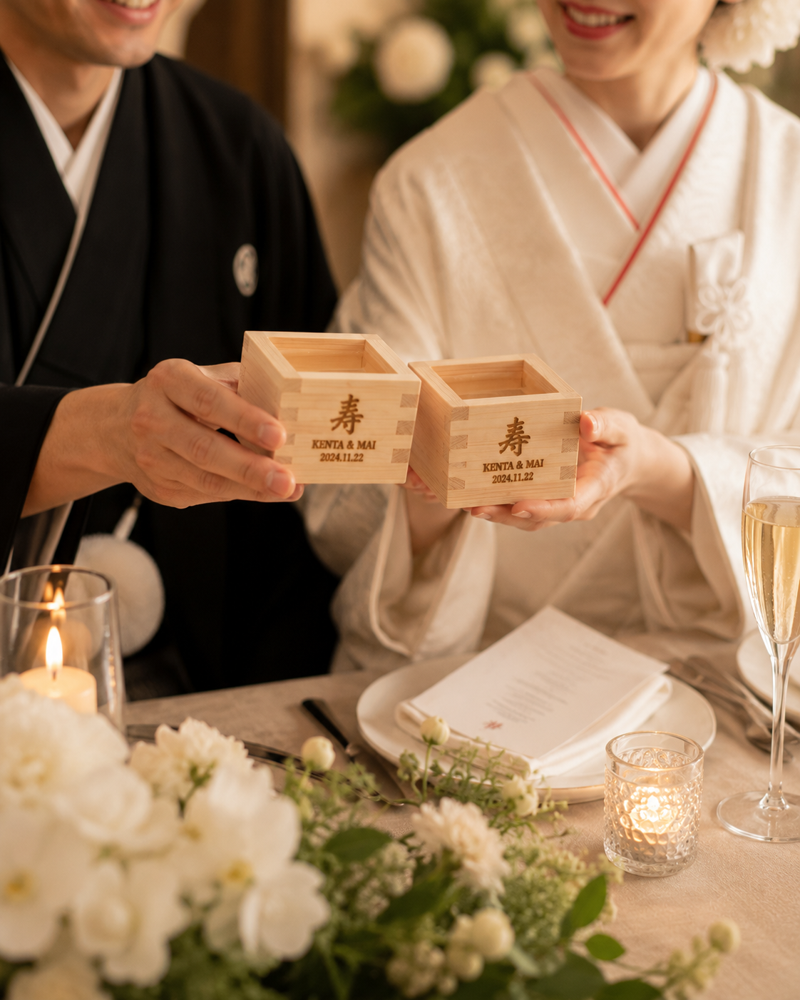
03 — Célébration
Symbole de croissance et de bonne fortune, le masu trouve naturellement sa place lors des mariages, des inaugurations et de tous les moments qui méritent d'être marqués.
04 — Particuliers
Un cadeau culturel japonais pour un proche à l'étranger, une pièce commémorative, un objet décoratif. Gravure personnalisée possible dès une seule pièce.
Exemple — KACHIU
KACHIU est une marque créée à Fuefuki, dans la préfecture de Yamanashi, par Massu, fondateur de FOMUS. Son nom vient du kachiu, forme locale de pêche au cormoran dans laquelle le pêcheur avance à pied dans la rivière ; un masu en hinoki y reçoit la marque d'un cormoran. Il est proposé avec une confiture de pêche réalisée avec des pêches cultivées à Fuefuki.
Sept tailles, de 54 ml à 1 800 ml. Gravure dès une pièce pour les particuliers, dix pour les entreprises. Avant votre commande, nous vous envoyons gratuitement un devis et un aperçu de la gravure finale. Paiement sur facture et expédition internationale possibles.
Projets bâtis autour du masu, usages en architecture et en aménagement intérieur, présence à l'étranger. Dites-nous ce que vous avez en tête : nous vous proposerons la marche à suivre, avec un devis. Pour les masu gravés eux-mêmes, MASU-STORE est la voie la plus rapide.